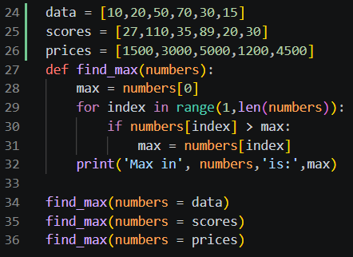
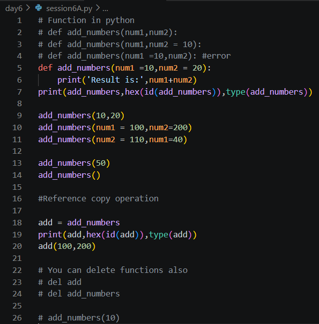
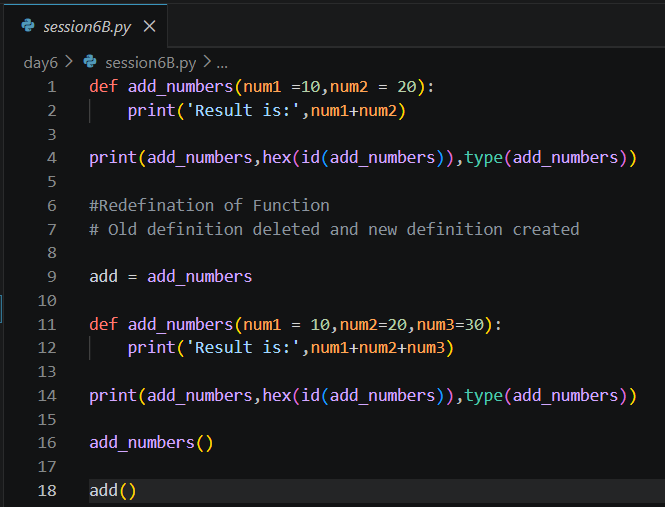
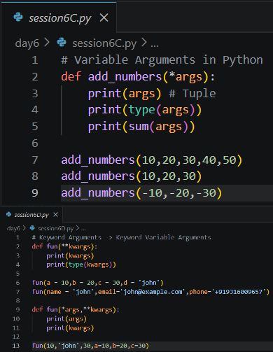
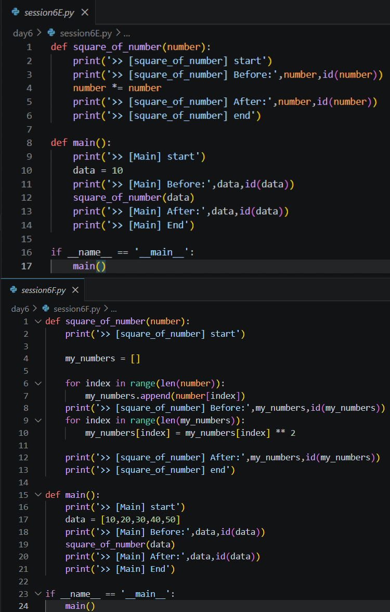
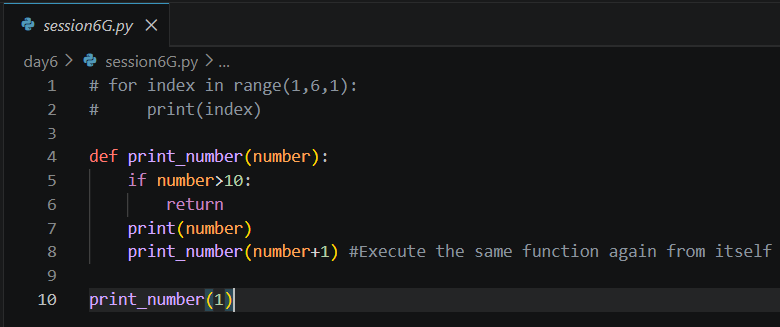
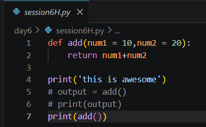

Date: 1 July 2026
Duration: 2:00 Hrs
Training Company: Auribises Technologies
Trainer: Ishant Kumar
Today's session focused entirely on Python functions. The trainer explained how functions help organize code, improve reusability, and reduce duplication. Different methods of passing arguments, function references, variable-length arguments, parameter passing, and an introduction to recursion were demonstrated through practical programming examples.
We began by understanding why functions are required in software development. Instead of writing the same code multiple times, a function can be created once and reused whenever required.
The trainer demonstrated how to define functions using the
def keyword and how parameters and return values help
make functions reusable.
A practical example involved creating a reusable function to find the maximum element from a list.

Various methods of supplying values to functions were explored. Python provides flexible ways to pass arguments depending on the application's requirements.
We experimented with different combinations of arguments and observed how Python automatically maps values to parameters.
add_numbers(10,20) add_numbers(num1=100,num2=200) add_numbers(num2=110,num1=40) add_numbers(50) add_numbers()

One interesting concept introduced today was that functions are treated as objects in Python.
Just like variables, functions also occupy memory, have their own identity, and can be assigned to another variable.
add = add_numbers
Multiple references can point to the same function object. The trainer also demonstrated how deleting one reference does not remove the function until all references are deleted.
Python allows redefining an existing function by creating another function with the same name.
The new definition replaces the old one for future calls, while any variables referencing the previous function continue pointing to the original function object.

Python allows functions to accept a variable number of arguments, making them flexible and reusable for different situations.
The *args parameter collects multiple positional
arguments into a tuple. This allows a function to process any number
of input values without changing its definition.
def add_numbers(*numbers):
...
The **kwargs parameter collects keyword arguments into
a dictionary. It is useful when passing named information whose
quantity may vary.
def student_details(**details):
...
We also learned that *args and
**kwargs can be used together in the same function.

One of the most important concepts covered today was understanding how Python passes objects to functions.
The trainer demonstrated the difference between immutable and mutable objects and how modifications inside a function affect the original object.

The trainer assigned us the task of implementing a deep copy of a list inside a function.
Instead of directly modifying the original list passed to the function, we were required to create a separate copy, perform the required operations on the copied list, and ensure that the original list remained unchanged.
I completed the assignment by creating a new list inside the function and copying all elements before making any modifications. This ensured that changes were applied only to the copied list while preserving the original data structure.
Through this assignment, I understood the importance of deep copying mutable objects to avoid unintended side effects during function execution.
Towards the end of the session, the trainer introduced the basic concept of recursion, where a function calls itself repeatedly until a terminating condition is reached.
We implemented a simple recursive example to print numbers and were informed that recursion and its memory representation would be covered in greater detail during the next session.

We also learned the difference between printing a value and returning a value from a function.
The return statement allows a function to send results
back to the calling program, making functions reusable in larger
applications.

*args and **kwargs.return statement.Today's session strengthened my understanding of one of the most fundamental concepts in programming—functions. Learning how Python handles function calls, arguments, references, and mutable objects gave me a much clearer understanding of how larger applications are built. The deep-copy assignment also highlighted the importance of protecting original data when working with mutable objects. I am looking forward to exploring recursion and its memory representation in the next session.
The trainer informed us that the next session will focus on recursion in detail, including recursion trees, stack memory, function call execution, and memory representation.